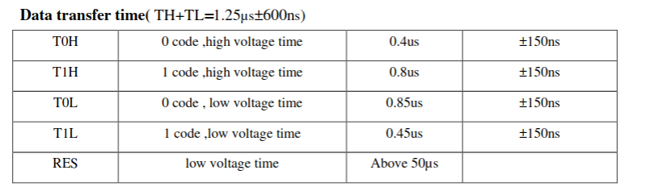
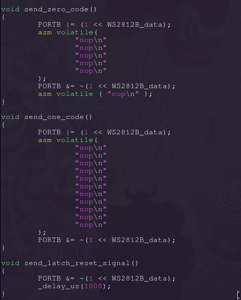
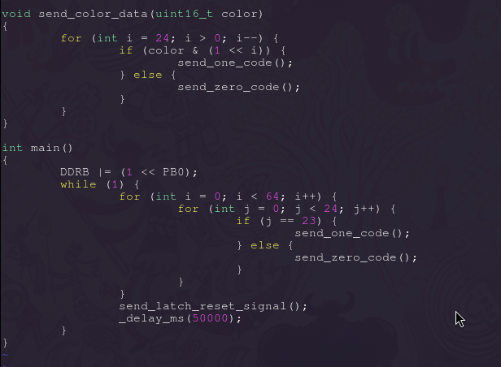
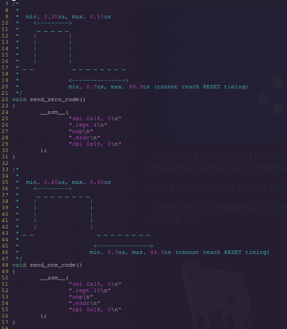

Driving WS2812b using AVR microcontrollers (ATTiny85)

In my previous article I showed you how to drive WS2812b LEDs using STM32 with usage of PWM and DMA. I have to own up to my mistake and say that I've made many mistakes in that article, both in terms of explanation and the code I provided. I want to apologize for that, I wrote that article very early in the morning and uploaded it without really double checking it, hope ya understand.. :hmm:
Today I come to you with something I've been banging my head against for quite some time, and that is using an AVR microcontroller to drive WS2812b LEDs. In my case I'm talking about ATTiny85, my personal favourite.
I love STM32, it's a wonderful microcontroller with thousands of possibilities and functionalities, but it always seemed like a bit of an overkill for just driving some LEDs and doing simple I2C and ADC, I started my MCU journey with ATTiny85, and used it for every project so far. And I really wanted to use it for the visor project too, but I ran into a wall with ATTiny85, that I didn't quite know how to pass - driving WS2812b LEDs.
You see, ATTiny85 turned out to be just... Way too slow for that! :hmm: :hmm: :hmm:
Most AVR MCUs can work up to 20MHz (with an external oscillator!), and a single PWM period is just... Too long to be able to send signals for WS2812b! I knew there were Arduino/AVR libraries available for ATTiny85, but I had some issues with using those:
- Libraries can take a LOT of space, we already don't have much flash or RAM on ATTiny85!
- I don't want to f*ck around with including external code into mine.
- My ATTiny85 shall be blessed only with my code :happy: (bad code)
As I said in my previous article - I'm not a fan of using libraries, especially when we are so limited when it comes to space on our MCU!
There's also another reason for that - I want to be regarded as The AVR Witch, and how can I be called that if I can't use ATTiny85 for such a simple project?
Let's dive into WS2812b timings.... again!!
WS2812b isn't that scary!
Let's go through those timings again, to send a 0 code to WS2812b we have to:
- Keep signal HIGH for 0.35 to 0.55us!
- Keep signal LOW for 0.7 to 1.0us!
And to send a 1 code we have to:
- Keep signal HIGH for 0.65 to 0.95us!
- Keep signal LOW for 0.3 to 0.6us!
As you can see, I took into account the small leeway of 150ns for each signal that WS2812b gives us! Another important thing is that we have no upper limit for the RESET/LATCH signal!
With those timings, it seems we are a little bit less constrained but it doesn't help us much, at least that's how it seems for now!
"But Cassiopeia, ATTiny85's PWM is still too slow for us to send such signals!"
Who said we have to use PWM?
AVR Assembly (ten gazillion nop instructions)

Don't be scared, we won't be doing any complex AVR Assembly here, in fact we will be doing nothing (through AVR Assembly)!
As I stated before - we won't be using PWM here at all! We will be manually keeping a pin high/low for certain amount of time to send appropriate WS2812b signals!
I still remember trying to use delay functions to create those artificial timings between signals, and of course that didn't work, those functions are just... Too slow! :hmm:
One way to achieve such delays is to just tell the MCU to... :happy: do NOTHING And the best way to do so is to use AVR Assembly's nop instruction!
NOP is an instruction that does literally nothing, but it does a VERY important thing for us - it creates a very, very short delay. I would be lying if I said I took my time to calculate precisely how much time a single nop will use on my 16MHz ATTiny85. I literally just threw those nops at the code and looked at my oscilloscope to see how many I should use :happy: :happy: :happy:
Here's an example of my code :3
As you can see, I simply set the port (in my case its PORTB0) high and then execute a certain amount of inline assembly NOPs to keep the signal high for a given amount of time! :happy:
The Reset signal is handled very poorly here, since it doesn't really have an upper bound, I decided to simply use a delay function, I'll surely replace it with a proper delay later :3
Let's try sending some data! Blue is a nice colour, so let's make our LED Matrix shine blue!
As you can see, the for loop in send_color_data function goes in reverse, that's because WS2812b accepts data MOST SIGNIFICANT BIT first, so we have send data "in-reverse" :hmm: Keep in mind that I don't actually use this function in this example, but just wanted to put it here to remind you of how WS2812b accept data :happy:
In our main function we set PORTB0 as output by writing to the DDRB register. In a for loop we go over 64 LEDs, and since each LED is built from 24 bits of data, we go over those 24 bits. And when we reach the last bit (Also!! WS2812b use "GRB" color order!), we send a one, otherwise we keep sending zeroes.
After we are done with all of our data, we simply send the reset/latch signal. :3
:happy:!!
Sorry for this low-quality photo, it's REALLY late here, but you can see that our LEDs are blue!!! And simply by rawdogging bitbanging our data and holding it high or
low for required amounts of time!
The code I showcased here is not perfect, there are a lot of factors that determine the length of our signals, I'll surely try to move the entire setting pin high/low fully to assembly, with a cool loop or whatnot :3
And that's the end of this blog post :3
Thank you for reading!!!!!!!!! See ya next time! I'm planning on releasing a simple .h library for AVR MCUs, we will see how far I'll go in that -w-
UPDATE!! IMPORTANT
There's one important thing I actually forgot to mention. The low data period between bits can be up to 49.9us long! We just cannot reach the 50us low latch/reset signal!
Take a look at this here piece of updated code!
I decided to fully switch to inline assembly code, here's a quick explanation:
sbi 0x18, 0: sets 0 bit at 0x18. 0x18 is the address of the PORTB register. Setting 0 bit of PORTB will set PB0 pin on my ATTiny85 high!
.rept 10: repeats the next instruction(s) 10 times
.endr: ends the repeat
cbi 0x18, 0: same as with sbi, but clears the bit instead!
This is my first time actually using inline assembly in C code, it was pretty fun, especially since I really like writing RAW AVR Assembly :happy:
I think that's everything, see ya next time!